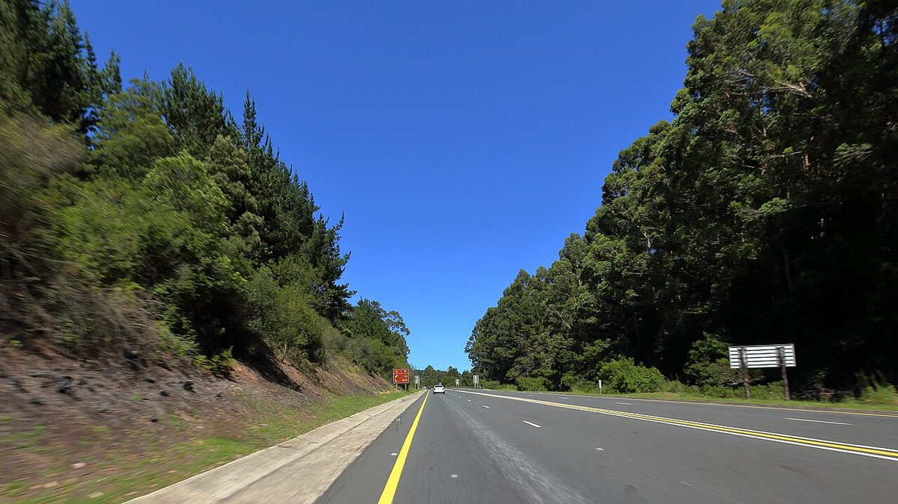

Trail and road races between Cape Town and Port Elizabeth for Christopher in George. Switch between Cards, Calendar, and Map. Local Mossel Bay–Knysna–Plett events are gold-edged.
No races match those filters.
No races in this month for the current filters.
No races with locations match those filters.